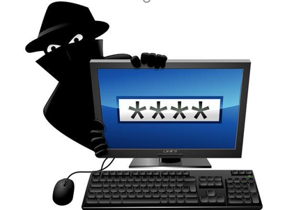

La Importancia de la Seguridad Informática.

Las tecnologías en los últimos tiempos, han revolucionado los estilos de vida de la sociedad, manifestándose en todos los sentidos con las nuevas tecnologías. El Objetivo: El utilizar las nuevas tecnologías en diversidad de organizaciones, ha fomentado la cultura de la informática, que así mismo crea políticas de seguridad a quienes los utiliza. La seguridad es una necesidad prioritaria para cualquier institución, empresa o bien sea personal, y es definida por tres características importantes como son: Integridad, disponibilidad, confidencialidad, son responsables de la seguridad informática tanto los directivos de cualquier organización, como los encargados de las funciones tecnológicas y su seguridad en cuanto a la información contenida en ella, tanto los ingenieros, tecnólogos, técnicos, especialistas en informática, son responsables del debido cuidado sobre las informaciones entregadas a su cargo, por lo cual deben emplear medidas de seguridad para los repositorios y demás sistemas. Además de tener en cuenta como identificar y gestionar amenazas, riesgos, vulnerabilidad de cualquiera de los sistemas y sobre todo como minimizar y solucionar esos riesgos. Lo que queremos resaltar sobre la seguridad informática son: Las políticas, gestión de riesgos, procesos que garanticen la seguridad de los sistemas de información de cualquier organización.